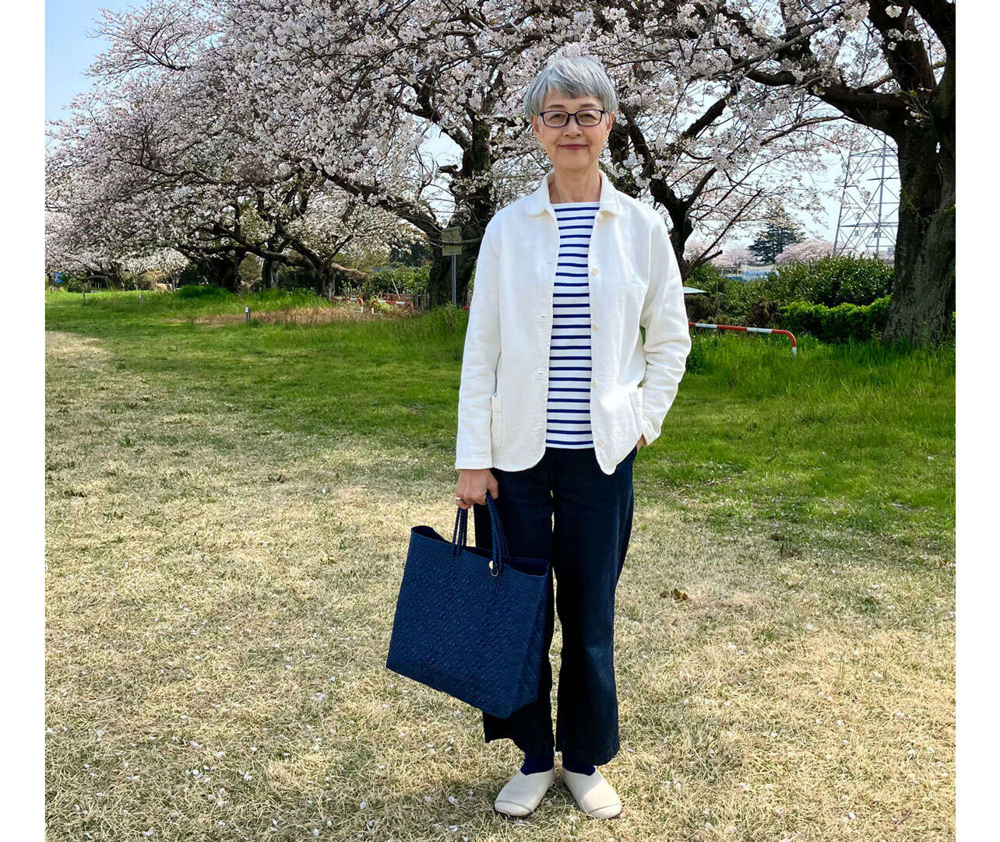
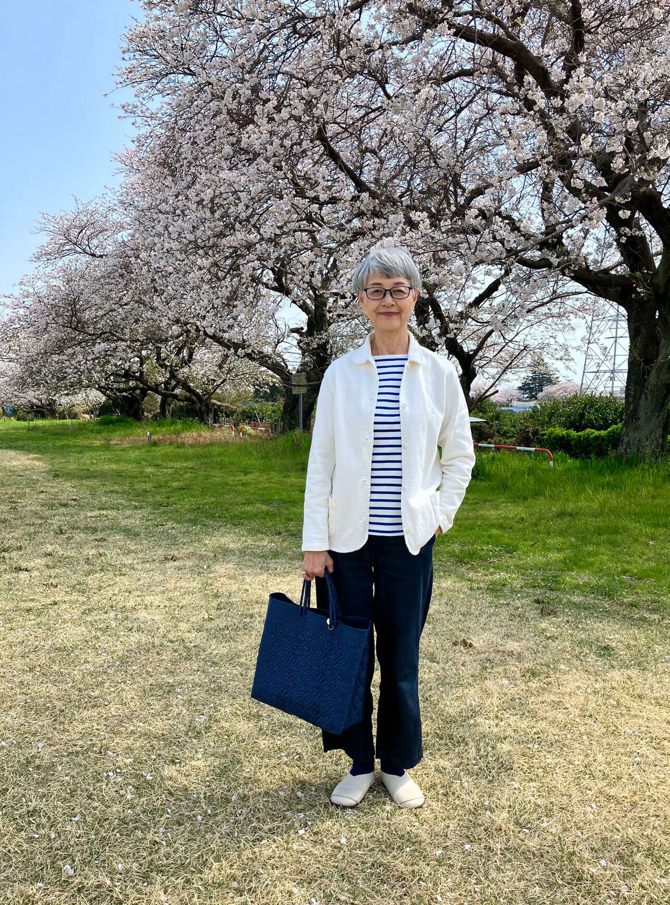
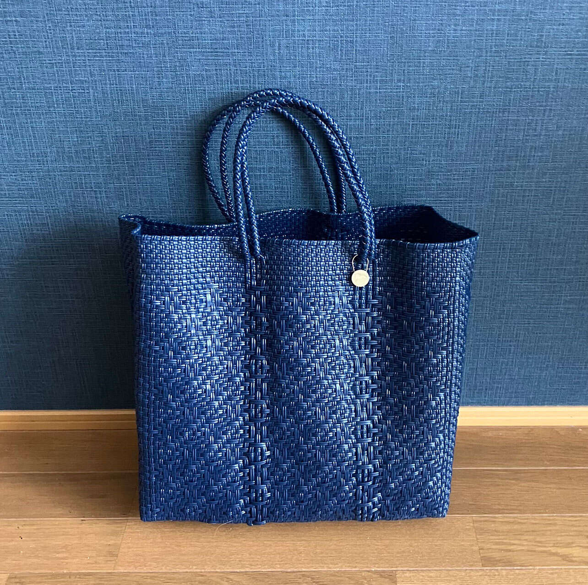

“60多岁的时尚：一个简单的衣柜就能让你开心” （小和田妙子/KADOKAWA）第3部分【共7部分】
随着年龄的增长，你是否发现自己越来越停在衣柜前？这是我希望您拿起的第一本由 Instagram 红人小和田妙子写的书。“60多岁的时尚：一个简单的衣柜就能让你开心”（角川）。她住在静冈，提倡“成年人的传统”，拥有美丽的白发。它充满了关于如何穿着不太浮华但又有些精致的衣服的技巧。这次，我们将为大家介绍一些专属于你的时尚魔力，让你享受照镜子的乐趣，以及一些点亮你日常生活的精彩随笔。
*本文摘自小和田妙子（作者）所著《60岁及以后的时尚：让你快乐的简单衣柜》一书。

连体衣/Mademoiselle Nonnon T恤、牛仔布、袜子/MUJI包/Letra鞋/Brute
[春天] 青少年正处于传统的鼎盛时期。无论我多大，我最喜欢的衣服都不会改变
协调的基础通常是两种颜色，大多数都是白色、黑色、海军蓝、灰色等几乎无彩色的颜色，但在春夏季，我会尝试使用看起来尽可能清爽的颜色。
尤其是冬去春来，蓝白色更能点亮你的心情。你会想要盛装打扮去野餐。眼镜框也是蓝色的，与蓝色的Mercado包包相配，营造出统一感。
外层连体服采用吸汗材料制成，可以放入网中并在洗衣机中清洗，使其成为易于处理的物品。
当我还是学生的时候，传统时尚正处于鼎盛时期，我痴迷于《男士俱乐部》、《MC姐姐》和我创办的时尚杂志。 “AnnAn”教会了我自由时尚。即使是现在，我也经常穿连体工作服或牛仔布，以这种时尚为基础。

来自墨西哥的 Mercado 包由再生塑料制成，防水，可以随身携带，不用担心弄脏，非常适合户外活动。